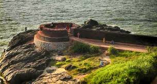
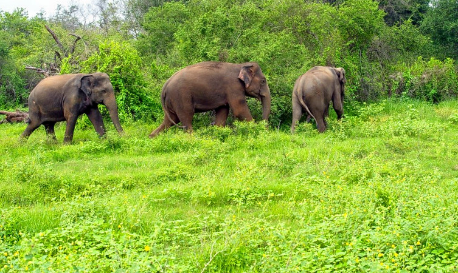

Kasaragod is a town situated in the northern part of Kerala. It is famous for the handloom and coir industries.Situated in the rich biodiversity of Western Ghats, it is known for the Chandragiri and Bekal Forts, Chandragiri River, historic Kolathiri Rajas, natural environment of Ranipuram and Kottancheri Hills, historical and religious sites like the Madiyan Kulom temple, Madhur Temple, Ananthapuram Lake Temple and Malik Deenar Mosque. It is located 50 km south of the major port city & a commercial hub Mangalore and 578 km north of state capital Thiruvananthapuram.
Kasaragod is home to the Central Plantation Crops Research Institute, originally established in 1916 as the Coconut Research Station. It is part of India's National Agricultural Research System under the Indian Council of Agricultural Research. According to the Institute, Kerala "lies in the heart of the major coconut growing areas of the country." It is also home to the Indian Society for Plantation Crops, which publishes the Journal of Plantation Crops and holds symposiums on the subject. The Central University of Kerala is also located in Kasargod(Periya hills).

Bekal Fort
The 300 years old defensive mechanism which is the largest and well-preserved fort makes it one of the best Kasaragod tourist place.

Parappa
A paradise for nature lovers and a fine ranked in the list of tourist places in Kasaragod. It is a natural habitat of some underrated fauna like a slow turtle, the prickly porcupine, Malabar hornbill, Slender loris, and the cute wild jungle cat.
Thaikadapuram
An ideal locale for a peaceful vacay! If rare and unexplored fauna catches your attention then you must visit this beach in the monsoon season to watch some olive ridley turtles. Watch the sand turn golden and the sun setting with vivid colors.